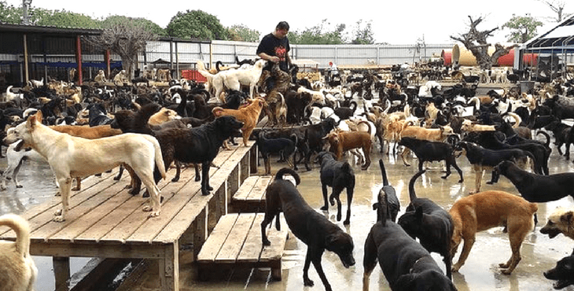

It is known that animals have been under oppression of humans for centuries now, but as animals alike, we should treat them equally. This includes the stray animals on the street from loss of appropriate habitats and pet abandonment. So, how can you help these animals?
You can help these stray animals by calling your local animal rescuing organization, to make sure they are not contracted with rabies, or any other bizarre animal disease and that they do not infect furthermore.
Or if you want to risk contracting rabies, you may approach the stray animal, but with assurance that it is healthy. Approach with extreme caution, fast and sudden movements might trigger the hostility of the stray animal. If you manage to approach the stray to a close distance, and they look calm and show signs of friendliness, make small and gentle physical contact. If they seem to trust you, use food or intriguing objects to lure the stray animal into somewhere you can manage with ease. You can now
Bring the stray animal to the vet for a checkup.
Bring it to your local shelter if you are not looking for a pet
Bring it to your house and start your research on the requirements of owning the animal as a pet.
If you do not feel like adopting a stray animal from the street to be your pet, (stray animals are more likely to have contracted a disease from the streets) you can always adopt from a shelter. These shelter animals have been checked up previously before. We do not encourage buying from a pet store for various reasons, find more information in the Inbred Animals tab. This picture shows a pet sancturary in Taiwan taking care of 3000 dogs. As you can see, the shelter is crowded. If you want to contribute to our cause, go to the Adoption sites near you tab to find the location of this site and help. Click the back arrow to go back to the main page.
